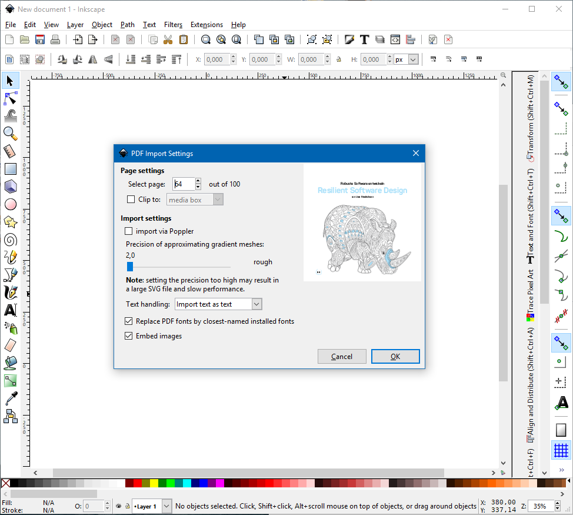

Vectorizing raster image with Inkscape
18.
April
2017
In Vol. 8 of Der Softwerker - which I recommend to take a look at if you are a german speaking developer - are some really nice adult-coloring-images (I think thats the name of the recently hyped pictures) of animals. Because my girlfriend loves rhinos I wanted to get the image on page 64. So I downlaoded the pdf and opened the page with Inkscape and the shown settings.
I removed the text and already filled color with ease but then I recognized that the rhino itself was no vector image. Why do you do this?! I want nice sharp and scaling vector images!
Luckily Inkscape is a mighty tool. With the function Trace Bitmap I vectorized the image. The only diffuculty is to find out what parameters are good for the given image.
Raster image
Vector image
The result is a clean sharp scalable and 850 kb image instead of a 2220 kb raster image with all its disadvantages. You can right-click on the images to show them in a new tab and zoom in to see the differences.